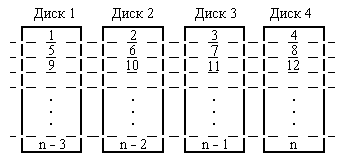
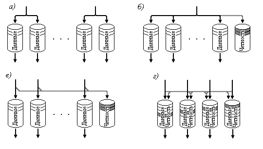

4.2.3. Организация дисковых массивов (RAID)
Еще одним способом повышения производительности дисковой памяти стало построение дисковых массивов, хотя этот нацелен не только (и не столько) на достижение более высокой производительности, но и большей надежности работы запоминающих устройств на дисках.
Технология RAID (Redundant Array of Independent Disks – избыточный массив независимых дисков) задумывалась как объединение нескольких недорогих жестких дисков в один массив дисков для увеличения производительности, объема и надежности, по сравнению с одиночным диском. При этом ЭВМ должна видеть такой массив как один логический диск.
Если просто объединить несколько дисков в (неизбыточный) массив, то среднее время между отказами (СВМО) будет равно СВМО одного диска, деленному на количество дисков. Такой показатель слишком мал для приложений, критичных к аппаратным сбоям. Улучшить его можно применяя реализуемую различным образом избыточность при хранение информации.
В RAID системах для повышения надежности и производительности
используются комбинации трех основных механизмов, каждый из которых хорошо известен
и по отдельности:
- организация “зеркальных” дисков, т.е. полное дублирование хранимой информации;
- подсчет контрольных кодов (четность, коды Хэмминга), позволяющих восстановить
информацию при сбое;
- распределение информации по различным дискам массива так, как это делается
при чередовании обращений по блокам памяти (см. interleave), что повышает возможности
параллельной работы дисков при операциях над хранимой информацией. При описании
RAID этот прием называют “stripped disks”, что буквально означает “разделенные
на полоски диски”, или просто "полосатые диски"..
Эти полоски (далее называемые блоками) данных с каждого диска чередуются, как показано на рис. 43 для случая массива из четырех дисководов, образуя единый логический диск. Видно, что этот рисунок очень похож на рис. 6.

Рис. 43. Разбиение дисков на чередующиеся блоки - “полоски”.
Изначально было определено пять типов дисковых массивов, обозначаемых RAID 1 – RAID 5, различающихся по своим особенностям и производительности. Каждый из этих типов за счет определенной избыточности записываемой информации обеспечивал повышенную отказоустойчивость по сравнению с одиночным дисководом. Кроме того, массив дисков, не обладающих избыточностью, но позволяющий повысить производительность (за счет расслоения обращений), стали часто называть RAID 0.
Основные типы RAID массивов можно кратко охарактеризовать следующим образом [14].
RAID 0. Обычно этот тип массива определяется как группа дисков с чередованием (stripped) расположения информации без контроля четности и без избыточности данных. Размеры чередующихся областей (stripes – “полосок”, или блоков) могут быть большими в многопользовательском окружении или малыми в однопользовательской системе при последовательном доступе к длинным записям.
Организация RAID 0 как раз и соответствует той, которая показана на рис. 43. Операции записи и чтения могут выполняться одновременно на каждом дисководе. Минимальное количество дисководов для RAID 0 – два.
Для этого типа характерны высокая производительность и наиболее эффективное использование дискового пространства, однако выход из строя одного из дисков приводит к невозможности работы со всем массивом.
RAID 1. Этот тип дискового массива (рис. 44, а) известен также как зеркальные диски и представляет собой просто пары дисководов, дублирующих хранимые данные, но представляющиеся компьютеру как один диск. И хотя в рамках одной пары зеркальных дисков разбиение на полоски не производится, чередование блоков может быть организовано для нескольких массивов RAID 1, образующих вместе один большой массив из нескольких зеркальных пар дисков. Такой вариант организации получил название RAID 1 + 0. Существеут и обратный вариант.
Все операции записи производятся одновременно в оба диска зеркальной пары, чтобы информация в них была идентична. Но при чтении каждый из дисков пары может работать независимо, что позволяет выполнять одновременно две операции чтения, удваивая тем самым производительность при чтении. В этом смысле RAID 1 обеспечивает наилучшую производительность среди всех вариантов дисковых массивов.
RAID 2. В этих дисковых массивах блоки – сектора данных чередуются по группе дисков, часть из которых используется только для хранения контрольной информации – ECC (error correcting codes) кодов. Но поскольку во всех современных дисках имеется встроенный контроль с помощью ECC кодов, то RAID 2 мало что дает, по сравнению с другими типами RAID, и сейчас редко используется.
RAID 3. Как и в RAID 2 в этом типе дискового массива (рис. 44, б) блоки –сектора чередуются по группе дисков, но один из дисков группы отведен для хранения информации о четности. В случае выхода дисковода из строя восстановление данных осуществляется на основе вычисления значений функции "исключающее ИЛИ" (XOR) от данных, записанных на оставшихся дисках. Записи обычно занимают все диски (так как полоски короткие), что повышает общую скорость передачи данных. Так как каждая операция ввода-вывода требует доступа к каждому диску, массив RAID 3 может обслужить в каждый момент времени только один запрос. Поэтому данный тип обеспечивает наилучшую производительность для одного пользователя в однозадачном окружении с длинными записями. При работе с короткими записями во избежание снижения производительности требуется синхронизация шпинделей дисководов. По своим характеристикам RAID 3 близок к RAID 5 (см. ниже).

| Рис. 44. Варианты организации дисковых массивов RAID: а) RAID 1, б) RAID 3, в) RAID 4, г) RAID 5 (дисководы и блоки, используемые для хранения кодов четности показаны затененными). |
RAID 4. Эта организация, показанная на рис. 35, в), похожа на RAID 3 с той лишь разницей, что в нем используются блоки (полоски) большого размера, так что записи можно читать с любого диска массива (кроме диска, хранящего коды четности). Это позволяет совмещать операции чтения на разных дисках. При операциях записи всегда происходит обновление диска четности, поэтому их совмещение невозможно. В целом, данная архитектура не имеет особых преимуществ перед другими вариантами RAID.
RAID 5. Этот тип дискового массива похож на RAID 4, но хранение кодов четности в нем осуществляется не на специально выделенном диске, а блоками, располагающимися поочередно на всех дисках. Эту организацию даже иногда называют массив с “вращающейся четностью” (можно отметить некую аналогию с назначением линий прерываний для слотов шины PCI или с циклическим приоритетом контроллера прерываний в процессорах линии x86). Такое распределение позволяет избежать ограничения возможности одновременной записи из-за хранения кодов четности только на одном диске, характерного для RAID 4. На рис. 44, г) показан массив, состоящий из четырех дисководов, причем для каждых трех блоков данных имеется один блок четности (эти блоки заштрихованы), местоположение которого для каждой тройки блоков данных изменяется, перемещаясь циклически по всем четырем дисководам.
Операции чтения могут выполняться параллельно для всех дисков. Операции записи, требующие участия двух дисководов (для данных и для четности) обычно также могут совмещаться, так как коды четности распределены по всем дискам.
Сравнение различных вариантов организации дисковых массивов показывает следующее.
Организация RAID 0 – это наиболее быстрый и эффективный вариант, но не обеспечивающий устойчивости к сбоям. Он требует минимум 2 дисковода. Операции записи и чтения могут выполняться одновременно на каждом дисководе.
Архитектура RAID 1 наиболее пригодна для высокопроизводительных высоконадежных приложений, но и наиболее дорогая. Кроме того, это единственный вариант, устойчивый к сбоям, если используются только два дисковода. Операции чтения могут выполняться одновременно для каждого дисковода, операции записи всегда дублируются для зеркальной пары дисководов.
Архитектура RAID 2 используется редко.
Дисковый массив типа RAID 3 можно использовать для ускорения передачи данных и повышения устойчивости к сбоям в однопользовательской среде при последовательном доступе к длинным записям. Но он не позволяет совмещать операции и требует синхронизации вращения шпинделей дисководов. Для него нужно, как минимум, три дисковода: 2 для данных и один для кодов четности.
Архитектура RAID 4 не поддерживает одновременные операции и не имеет преимуществ, по сравнению с RAID 5.
Организацию RAID 5 характеризует эффективность, устойчивость к сбоям и хорошая производительность. Но производительность при записи и в случае отказа дисковода хуже, чем у RAID 1. В частности, поскольку блок кодов четности относится ко всему записываемому блоку, то, если пишется только часть его, необходимо сперва считать ранее записанные данные, затем вычислить новые значения кодов четности и только после этого записать новые данные (и четность). Операции перестройки также требуют больше времени из-за необходимости формирования кодов четности. Для данного типа RAID нужно, как минимум, три дисковода.
Кроме того, на основе наиболее распространенных вариантов RAID: 0, 1 и 5 могут формироваться так называемые двухуровневые архитектуры, в которых сочетаются принципы организации различных типов массивов. Например, несколько RAID массивов одного и того же типа можно объединить в одну группу массивов данных или массив четности.
За счет такой двухуровневой организации можно достичь требуемого баланса между увеличением надежности хранения данных, характерным для массивов RAID 1 и RAID 5 и высокой скоростью чтения, присущей чередованию блоков на дисках в массиве типа RAID 0. Такие двухуровневые схемы иногда называют RAID 0+1 или 10 и 0+5 или 50.
Управление работой RAID массивов может осуществляться не только аппаратно, но и программно, возможность чего предусматривается в некоторых серверных вариантах операционных систем. Хотя понятно, что такая реализация будет иметь существенно худшие характеристики производительности.